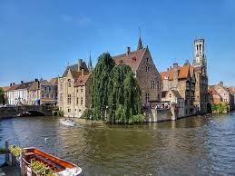
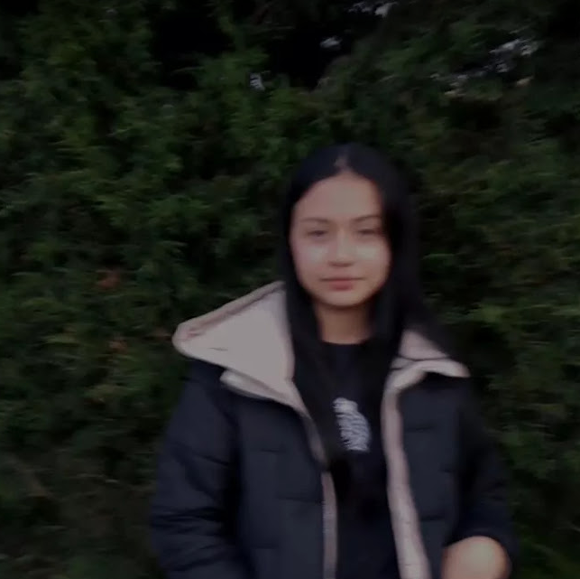
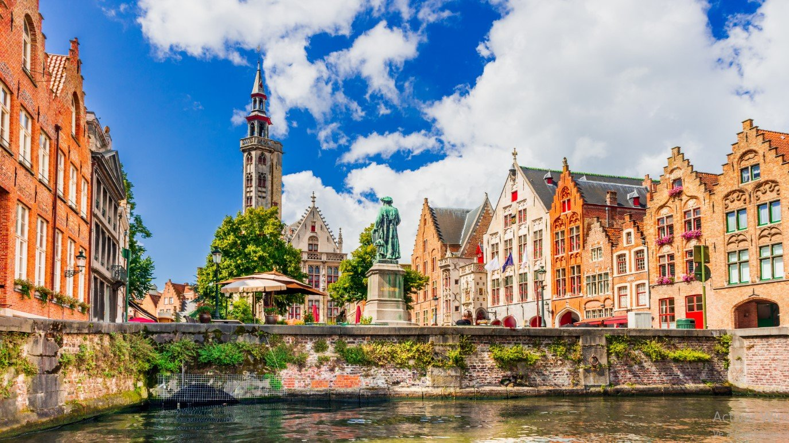

El país tiene regiones características, como Flandes en el norte, de
habla neerlandesa, Valona en el sur, de habla francesa, y una
comunidad de habla alemana en el este. La capital
bilingüe, Bruselas, tiene casas consistoriales
adornadas en el Gran Palacio y elegantes edificios
art-nouveau.



Brujas, la capital de Flandes Occidental en el noroeste de
Bélgica, se distingue por sus canales, las calles con
adoquines y los edificios medievales. Su puerto, Zeebrugge, es
un importante centro de pesca y comercio europeo.
Estudiar en el extranjero en Bélgica se traduce en un sistema
educativo trilingüe de alta calidad con tasas de matrícula
asequibles y diversos programas de investigación. Desde la
adopción del proceso de Bolonia, Bélgica ofrece títulos de
licenciatura, maestría y doctorado.
En la región de habla holandesa, las tasas de matrícula para
los programas de grado a tiempo completo son de alrededor de 940
EUR por año para los estudiantes europeos. Para los ciudadanos no
europeos, las tasas universitarias en Bélgica fluctúan entre 940 y 6,000 EUR dependiendo del programa.